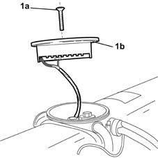
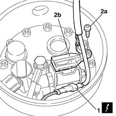

1043A54 cover of gpl tank valve unit with submerged fuel pump ecu r r with gpl tank removed
- Path
- Procedures > 10 ENGINE UNIT > 1043 LGP TANK AND PIPES > 1043A gpl tank > 1043A54 cover of gpl tank valve unit with submerged fuel pump ecu r r with gpl tank removed
- Kind
- repair procedure (removal / refitting; the operation number is the code)
- Applies to
- engines: 1.6 16v; all production periods; only with equipment: GPOWER
- Interactive page
- https://sloeber94.github.io/elrnDB-fMltpl/en/#/2891498
Applies to: engines: 1.6 16v; all production periods; only with equipment: GPOWER and Euro 3
 Removing
Removing
 Refitting
Refitting1. Undo the fixing bolt (1a) and place the cover with the control unit (1b) incorporated to the side.

Applies to: engines: 1.6 16v; all production periods; only with equipment: GPOWER and Euro 3
1. Disconnect the electrical connector for the LPG electric pump management control unit.
 | Name | Connector |
|---|---|---|
1 | Availability. of electric pump and GPL supply. solenoid valve. |
2. Undo the bolt (2a) and disconnect the electrical connector for the pump (2b), then remove the cover for the valve unit with the electronic control unit.

Applies to: engines: 1.6 16v; all production periods; only with equipment: GPOWER and Euro 3
Refitting
RemovingConnect the electrical connector for the pump, taking special care to fit it correctly on the three contacts on the LPG pump; secure the connector using the bolt.
Connect the electrical connector for the electric pump management control unit.
| Name | Connector |
|---|---|---|
- | Availability. of electric pump and GPL supply. solenoid valve. |
Fit the cover with the control unit incorporated and tighten the fixing bolt.